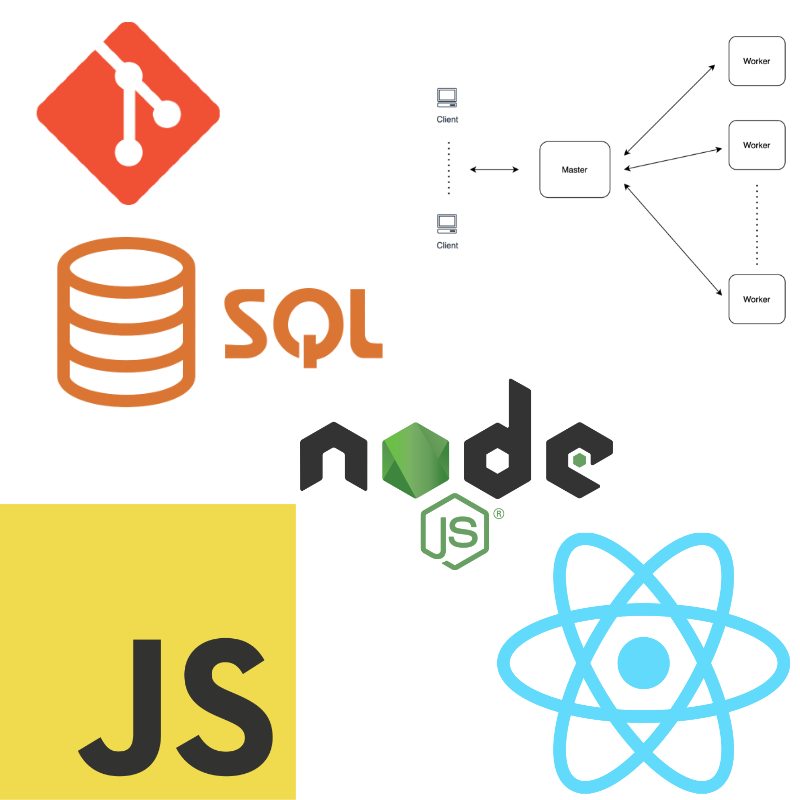

Distributive focuses on next generation distributed computing and the
parallelization of complex problems. They work alongside the
scientific computing field, hospitals, and more, all to leverage
distributed computing and make this process fast and efficient.
Located in Kingston Ontario, I'm privileged to have worked here in
person as a Software Developer for my first work term going into third
year.
Goals
I created 3 goals this work term that revolved around leadership as
well as problem solving. These included:
Learn how the in's and out's of the DCP (Distributed Compute
Protocol) functions which would allow me to debug, implement
features, and solve problems easier. This will result in knowing
exactly where something went wrong and figure out the solutions
with minimal guidance when it comes to discovering/fixing bugs,
writing tests, etc.
Work on my leadership skills even while being a new intern without
any previous experience. I want to be able to act as a leader and
show the existing developers that I can be counted on when it
comes to working on the codebase. I also want to make sure that I
can answer most of the questions that the other interns might have
which will allow them to grow/mature while I do.
Expand my knowledge of the JavaScript language as well as Node.js
as these two are the backbones of the DCP technology. I want to
build off of the knowledge I already know and start to focus on
more advanced topics of JavaScript that the DCP uses in their
codebase. By doing this, I'm not only broadening my personal
understanding of the languages and specific techniques used with
them, but I'm also benefiting the companies I may work for in the
future that use the same technologies.
Reflections
I was able to contribute heavily to the codebase even with sparse
experience working in a bigger codebase like this. Along with
another intern, we created an application that utilized DCP and
showcased it to our management and peers. This allowed us to be
more confident working with the technologies and understanding
them thoroughly. Overall, I was able to learn a lot about
developing software and contributed over 30 PR's to the codebase.
Overall, I worked really hard and despite it being my first work
term, I developed a lot of new features and fixed certain issues
throughout the codebase.
I was able to onboard within a day and because of that, assist my
peers with their on-boarding or any other questions they had. I
also started contributing to the codebase early on which allowed
me to grasp an understanding of proper coding conventions and the
whole PR process. I passed this knowledge down to the other
interns when it was their time to do the same. To showcase more
leadership, I even created a small event on Friday's where
developers would get together and solve algorithm problems in a
certain amount of time in order for everyone to sharpen their
skills but still have fun at the same time. Overall, I felt like a
leader during my work term and it allowed me to be more confident
as a developer.
I achieved this goal because since our codebase was written in
JavaScript, I forced myself to learn it thoroughly even though I
had previous experience with the language. I had even learned new
things about it throughout my time developing. I also learned how
to properly use a debugger and what it means to have one at all
times whether you are writing software or debugging it. I heavily
used these techniques and did not have experience using them
prior. Overall, the way I fixed bugs and wrote software saw an
increase in efficiency after working at this company.
Highlights

Technologies Used
While working at Distributive, I co-developed a Ray-Tracing engine
that utilized DCP and was able to get a working product showcased in
front of my peers and supervisor. I also implemented new database
functionalities as well as implemented a new compute cluster
mechanism. This would allow further growth for the company and have
multiple computers on different compute groups to do work. I also
did some front-end UI work in React.js for the company's new portal
page. Looking back, I was able to learn more about Node.js, SQL,
compute clusters, React.js, and much more. I also learned a lot of
new skills that I would not have come across in school. These
include debugging tools, how to contribute to an existing codebase,
how to make a PR, how to adhere to coding standards/styles, etc.
This was an amazing learning experience as I got to work with tools
and frameworks that I had never seen before and that broadened my
understanding of the industry.
Conclusion
These past four months at Distributive truly shaped me as a developer
and I'm grateful to have contributed to their codebase. Their product
is very innovative and something that their target audience gets a lot
of use out of. I admired the fast-paced environment of the startup and
appreciated the "always learning" mentality where no matter what, I
was always learning something new.
Acknowledgments
Special thanks to
Dan Desjardins
and
Wes Garland
for being great mentors. It was an awesome experience being able to
learn hands-on with them and be able to ask questions directly to
them. Also shoutout to
Bryan for the immense
support as well as always pushing me to be a leader in every case
possible (Thanks for letting me spill my Neovim knowledge onto you).